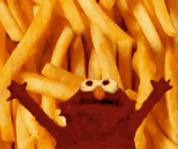

Fries

Now personally, I prefer fries that look flaky and shit and crispy. Idk how to get them like that tho. Lmk if u do.
What you'll need:
Steps:
- Cut: peel dem potatoes. Cut them into fries using a knife.
- Keep the cut fries in water to prevent browning.
- Rinse: Transfer potatoes to a colander and rinse under tap water for 15-20 seconds.
- Place fries in a pot with cold tap water, vinegar and salt. Boil over high heat then reduce stove to low so the surface ripples gently (not big bubbles).
Cook for 10 minutes then remove using slotted spoon into a colander do not tip into colander, fries will break.
- Dry 5 min. Spread em on lined trays.
- Fry once.
- Cool 30 min.
- Fry for a 2nd time.
- Season and enjoy!